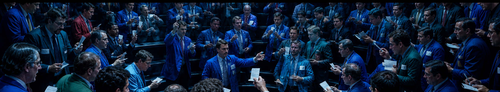

Bolsa de Ámsterdam — 1602: Con la VOC surge uno de los primeros mercados modernos de acciones, permitiendo negociación secundaria, especulación y nuevas formas de inversión.
Buttonwood Agreement — 1792: 24 corredores establecen reglas comunes de negociación en Nueva York, sentando las bases de la futura NYSE.
Open Outcry — Siglos XIX–XX: La negociación ocurre físicamente en trading pits. Compradores y vendedores forman precios mediante una subasta humana basada en oferta, demanda y liquidez.
